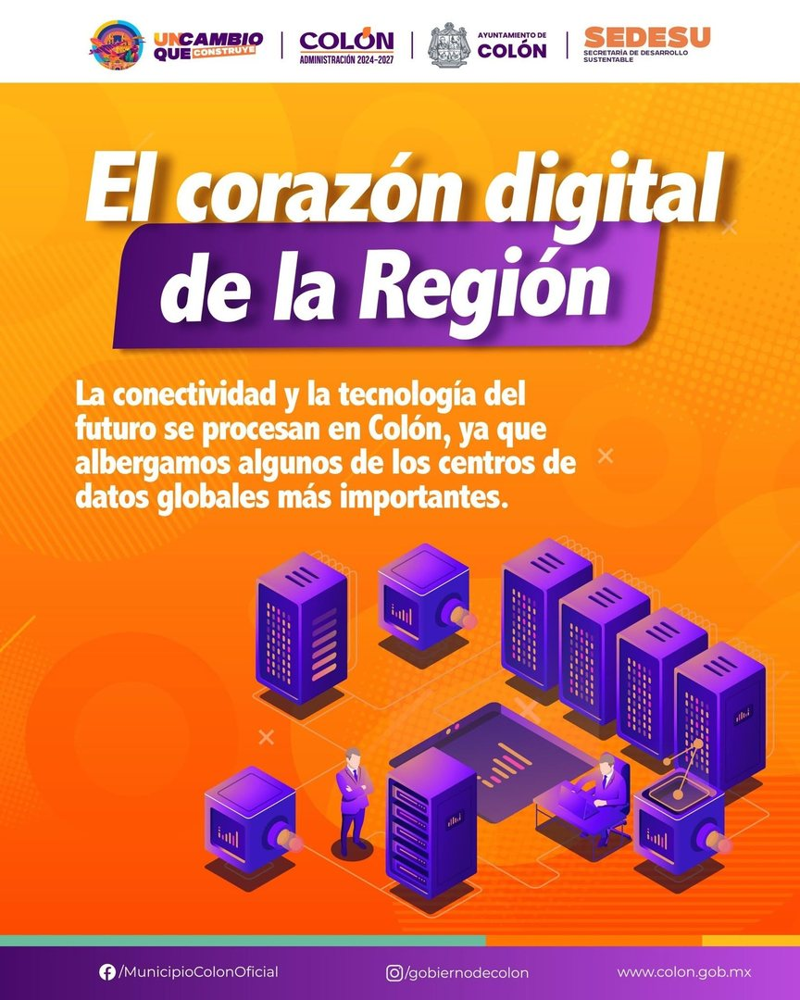

🏛️ Municipio de Colón
Recursos oficiales y canales del municipio
⚠️ En construcción. Esta sección llevará los recursos oficiales del municipio de Colón, Querétaro (sitio .gob.mx, contactos vigentes y el simulador de incidente municipal) solo cuando se verifiquen en fuente oficial — el proyecto no publica datos no verificados.
📌 Mientras tanto
Sitio oficial del municipio: colon.gob.mx — escríbelo tú en el
navegador, nunca sigas enlaces que te lleguen por mensaje.
¿Necesitas ayuda ahora?
🆘 NECESITO AYUDA 📚 Recursos confiablesColón, epicentro tecnológico

Querétaro vive una ola de inversión en infraestructura digital (centros de datos como el proyecto CloudHQ anunciado para Querétaro, conectividad e industria tecnológica) y Colón es parte de ese mapa. Más tecnología significa más oportunidad — y también más intentos de fraude. Por eso la seguridad digital es un tema de municipio. (Fuente: publicación del Ayuntamiento de Colón y prensa local, octubre 2026.)
🎓 Respaldo académico local
La Universidad Autónoma de Querétaro imparte Ingeniería en Tecnologías de Información con énfasis en Ciberseguridad en su Campus Colón — el talento y el conocimiento digital ya están aquí. Convenio de colaboración de la Facultad de Informática UAQ (fuentes: publicaciones oficiales de la UAQ).